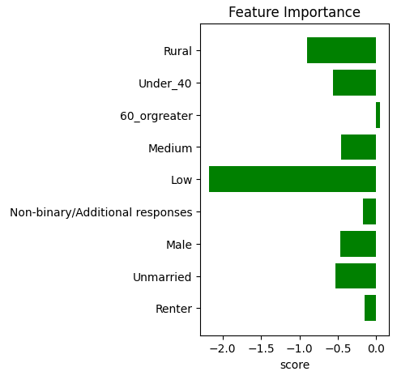

Optimizing our outreach: increasing donor retention using predictive modeling
In this data analysis project, I play the role of lead analyst for a hypothetical research organization looking to improve results in their upcoming fundraising campaign. This simulated prompt was offered as a part of Apra's 2023 Data Science Challenge.
The ambiguious nature of the prompt left much room for experimentation. I opted to produce a machine learning model predicting donor retention. I then performed a feature importance analysis on this model to efficiently filter the organization's target demographic based on which features produced more long-term donors, offering this recommendation to the hypothetical Executive Staff via a Jupyter Notebook deliverable.
This project was done entirely in Python via Jupyter Notebooks, with a simulated dataset provided by Apra.